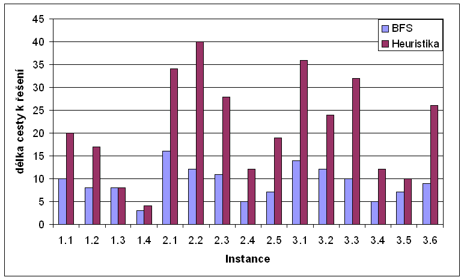
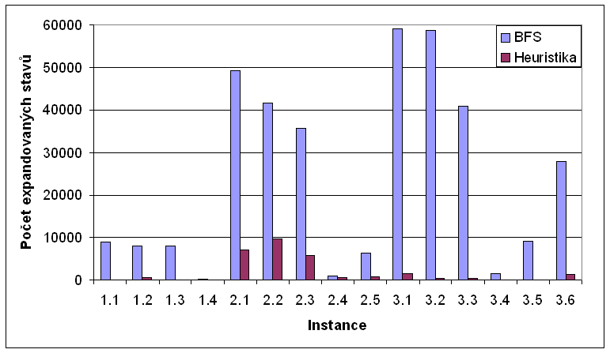

Zad�n�
Navrhn�te a implementujte heuristiku �e��c� zobecn�n� probl�m dvou k�bl�. Heuristiku otestujte na v�ech n�sleduj�c�ch p��kladech a srovnejte s prohled�v�n�m stavov�ho prostoru do ���ky (BFS). Voliteln� srovnejte i s prohled�v�n�m do hloubky (DFS). Zvolenou heuristiku popi�te ve zpr�v�.
Definice probl�mu
K dispozici jsou dva k�ble (p�edem dan�ch obecn� rozd�ln�ch objem�), vodovodn� kohoutek a kan�l. Na po��tku jsou oba k�ble pr�zdn�. Va��m �kolem je doc�lit toho, aby v jednom k�blu byla voda o p�edem stanoven�m objemu, p�i�em� m��ete pouze naplnit pln� k�bl z kohoutku, vyl�t cel� k�bl do kan�lu a p�el�t jeden k�bl do druh�ho tak, aby druh� k�bl nep�etekl. Probl�m lze zobecnit t�m, �e p�ipust�me u�it� v�t��ho po�tu k�bl�, aby na po��tku �e�en� byla v k�blech n�jak� voda, a �e p�edep�eme koncov� objem vody v ka�d�m k�blu.
Implementace
�lohu jsem implementoval v Jazyce C# jako konzolovou aplikaci. Vstupn� data jsou sou��st� k�du a v�sledky jsou vypisov�ny na standardn� v�stup. Z�kladem �e�en� je m�rn� modifikovan� BFS algoritmus. M�sto fronty CLOSE jsem pou�il mapu do kter� ukl�d�m ve�ker� stavy. Kl��em do mapy je Hash, kter� je roven obsahu v�ech k�bl� (pro 1 k�bl sta�� 6b, m�me 5 k�bl�, tj. sta�� 30b, tj. int). V�hodou tohoto �e�en� (inspirace od Augiho) je jeho rychlost a bezkonfliktnost. V p��pad� heuristiky jsem nahradil frontu OPEN prioritn� frontou. Priorita je rovna sou�tu absolutn�ch hodnot rozd�lu sou�asn�ho a koncov�ho stavu p�es v�echny k�ble. Tj. ��m men�� ��slo, t�m v�t�� p�ednost.
BFS
- BFS.cs - V metod� compute je implementov�n vlastn� v�po�et. While cykl dokud nen� fronta OPEN pr�zdn� vyb�r� z n� stavy a expanduj je (pln�, vyl�v� a p�el�v� k�ble). Ka�d� nov� objeven� stav je vlo�en do mapy STATES. Nov� expandovan� stav je vlo�en do OPEN pouze pokud nen� nalezeno �e�en�, nebo expandovan� stav m��e zlep�it �e�en�.
- Input.cs - Obsahuje pouze zad�n� (tj.: kapacity, po��te�n� a koncov� stav), pou�ita jako parametr konstruktoru t��dy BFS.
- Program.cs - Zavol� BFS pro ka�dou instanci a vyp�e v�sledek.
- State.cs - Reprezentuje stav stavov�ho prostoru, uchov�v� aktu�ln� stav k�bl�, ukazatel na p�ede�l� stav a d�lku cesty.
Heuristika
- Heuristic.cs - Z�klad je stejn� jako u BFS. Nav�c je pro ka�d� nov� stav vypo�tena Priorita (minim�ln� cesta vedouc� k c�li - sou�et absolutn�ch hodnot rozd�lu sou�asn�ho a koncov�ho stavu) a stav je vlo�en do prioritn� fronty.
- Input.cs - viz. Input z BFS.
- Program.cs - viz Program z BFS.
- PQ.cs - Prioritn� fronta. Implementov�na jako pole Front, kde rozm�r pole je d�n maxim�ln� hodnotou priority. Je to jednoduch� �e�en� a v tomto p��pad� posta�uj�c�.
- State.cs - viz. State z BFS + p�id�na metoda Priority().
Nam��en� hodnoty a v�sledky
M��il jsem na NTB s procesorem Centino 1.4GHz, nastaven� max Performance p�i nap�jen� z adapt�ru. Pou�it� OS: Windows XP SP2 s .net Framework 2.
Tabulka v�sledk� m��en�
| Instance | BFS | Heuristika | |||
|---|---|---|---|---|---|
| Po�et operac� | Nav�t�ven� stavy | Po�et operac� | Nav�t�ven� stavy | Generovan� stavy | |
| 1.1 | 10 | 8991 | 20 | 80 | 732 |
| 1.2 | 8 | 7988 | 17 | 544 | 1724 |
| 1.3 | 8 | 7895 | 8 | 12 | 121 |
| 1.4 | 3 | 155 | 4 | 5 | 121 |
| 2.1 | 16 | 49349 | 34 | 7050 | 25496 |
| 2.2 | 12 | 41668 | 40 | 9550 | 28547 |
| 2.3 | 11 | 35749 | 28 | 5745 | 20263 |
| 2.4 | 5 | 871 | 12 | 448 | 1975 |
| 2.5 | 7 | 6323 | 19 | 766 | 2762 |
| 3.1 | 14 | 59199 | 36 | 1367 | 4349 |
| 3.2 | 12 | 58771 | 24 | 370 | 3755 |
| 3.3 | 10 | 40907 | 32 | 300 | 2290 |
| 3.4 | 5 | 1460 | 12 | 39 | 359 |
| 3.5 | 7 | 9154 | 10 | 31 | 327 |
| 3.6 | 9 | 27772 | 26 | 1197 | 8178 |
V�pisy programu:
Graf: D�lka cesty k �e�en� (po�et manipulac� s k�bly)

Graf: Po�et stav� stavov�ho prostoru

Graf: Heuristika - srovn�n� po�tu generovan�ch a nav�t�ven�ch stav�

Z�v�r
Zadan� instance jsou p�ijateln� rychle �e�iteln� pomoc� BFS s o�ez�v�n�m neperspektivn�ch stav�. Heuristika zalo�en� na minimalizaci vzd�lenosti k v�sledku d�v� velice dobr� v�sledky. V pr�m�ru bylo vygenerov�no 102,5x m�n� stav�, p�i�em� cesta se pr�m�rn� prodlou�ila 2,3x. Maxim�ln� se cesta prodlou�ila 3,3x a v nejlep��m p��pad� bylo vygenerov�no 650x m�n� stav�.